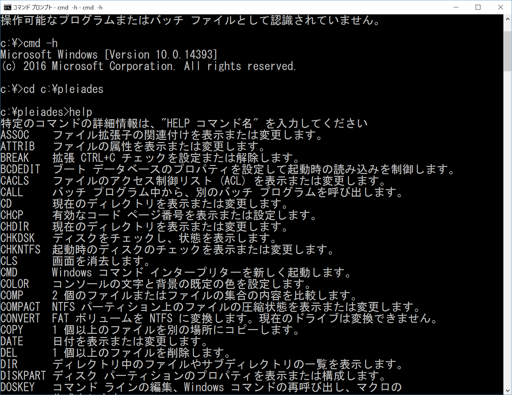

ITシステムエンジニア科
主なイベント
1年次
4月
入学式 MOS 健康診断
5月
免除試験へ向けての試験勉強
6月
免除試験へ向けての試験勉強
7月
基本情報技術者試験の午前免除試験
8月
マクロ SQL
9月
基本情報技術者試験の勉強
10月
コロナにより基本情報技術者試験延期
11月
Java
12月
Java資格試験
1月
就職活動 会社説明会開始
2月
応用・基本情報技術者試験に向けて勉強
3月
基本情報技術者試験(延期分)
2年次
4月
健康診断 応用情報技術者試験
5月
Java＆セキュリティ試験対策
6月
Java＆セキュリティ試験対策
7月
Java資格試験
8月
応用情報技術者試験に向けて勉強
9月
応用情報技術者試験に向けて勉強
10月
応用情報技術者試験
11月
html css
12月
クリスマスパーティー
1月
javascript
2月
卒業制作
3月
卒業式
授業内容

html
基本となる知識が付くまでは教科書に沿って授業が進行していきます。
html css
授業を行う前に2つのクラスに分かれることになります。1つは、基本となる知識を講師から学んだ後にサイトの制作に取り組むクラス。1つは、最初の授業からサイトの制作に取り組むクラス。どちらのクラスとも最終的には制作したサイトの発表をすることになります。
javascript&scratch
基本となる知識を講師から学んだ後にサイトの制作に取り組みます最終的には制作したサイト

IT概論
情報技術の基礎知識を養うためにソフトウェアを始めとする様々なITに関する知識を学ぶことになります。
ITシステムエンジニア科 主なカリキュラム
| ・一年次 |
|---|
| ・タイピング |
| ・MOS |
| ・SQL |
| ・HTML |
| ・JAVA |
| ・基本情報技術者試験対策 |
| ・二年次 |
|---|
| ・JAVA2級 |
| ・アプリ開発 |
| ・HTML（応用） |
| ・グループ開発 |
| ・javascript＆scratch |
| ・セキュリティ |
ITシステムエンジニア科の生徒にインタビュー
ITシステムエンジニア科二年
Nさん
- ITシステムエンジニア科に入ってよかったこと
- 他の学科と違っていろんな言語や内容の授業があり、幅広い知識が身に付いたこと
- 最後に一言
- 地元長崎で専門的な知識を学ぶならこの学校に入学することをおススメします！
取得可能な資格一覧
・基本情報技術者
・Javaプログラミング能力認定試験 3級
・情報セキュリティ初級試験
・Microsoft Office Specialist Excel 2016
・応用情報技術者
・Javaプログラミング能力認定試験 2級
・/
・/